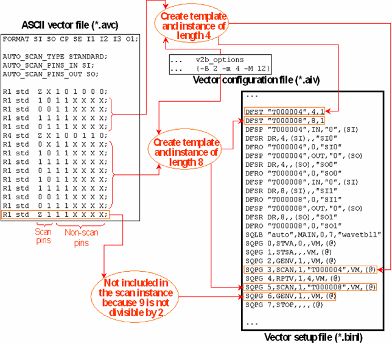

Detecting Scan Vectors Automatically
In a single-port setup, v2b can detect scan vectors and create scan instances automatically. But note that this function is not supported for multiport setups.
The basic principle is to convert sections of parallel ASCII vectors with a certain length and certain common properties into scan instances and create the required templates. These properties are:
- The repeat factor must be 1 (R1).
- All the vectors must have the same ASCII device cycle, and must contain the same state characters for all non-scan pins.
Parallel vectors with a repeat factor > 1 (R4, for instance) are never converted.
The length of these sections is controlled by certain v2b parameters as specified in the following table:
v2b parameters |
Explanation |
|---|---|
-B |
Defines a unit of which every template must be a multiple. This parameter is optional. The default is 4. |
-M |
Specifies the maximum length of a section that is to be converted into a scan instance and for which a template must be defined. This parameter is mandatory for automatic scan detection. Sections greater than the maximum length are divided into several scan instances if possible. |
-m |
Specifies the minimal length of a section that is to be converted into a scan instance and for which a template must be defined. This parameter is mandatory for automatic scan detection. |
For automatic scan detection, you must define the scan pins independently of templates, the input pins with the AUTO_SCAN_PINS_IN and the output pins with AUTO_SCAN_PINS_OUT statements. These two statements have the following format:
(AUTO_SCAN_PINS_IN|AUTO_SCAN_PINS_OUT) <pin_list>
The memory type must be specified with the AUTO_SCAN_TYPE statement (for which STANDARD is the only admitted parameter). These three statements must be inserted into the ASCII vector file immediately after the FORMAT statement.
The following figure illustrates the translation process for automatic scan detection:
